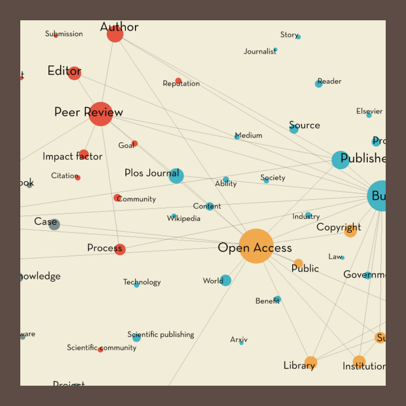

Open Access is a new, alternative way of publishing academic research where scholars themselves - or the funding institutions behind them - pay for appearing on journals, and not for consulting them. This being possible thanks to the internet, OA was born between the late 90's and the early 2000's, while officially becoming a recognised reality in 2003 with the Declaration of Berlin, now signed by more than 300 worldwide institutions. This new model has significantly different features from the more popular subscription based, which was the only one available until about 20 years ago. Its main distinctive characteristic, of course, is a totally free access to content: not only it has no costs, but it is accessible from everyone as long as there is an internet connection. Researchers may prefer publishing on Open Access journals in order to seek a quicker career progression: the publication process is way faster and, thanks to the content being available to every researcher instead of the only subscribers, cites are more frequent. On the downside, influential Open Access journals are still far fewer; also, part of the funds provided by the institutions need to go into Article Processing Charges (APC), not mentioning when authors don't have a university backing them up. Despite having solid advantages and the approval of many countries and institutions, Open Access is still a minor reality and doesn't represent at all a threat for the Subscription publishing model. How is this possible? In order to find an answer, we decided to trace the debate, controversies and widely acknowledged problems of OA.
By Mauro Abbattista, Piero Barbieri, Maria Elena Besana, Chiara Cirella, Manuel Impellizzeri, Andrea Lacavalla
What prevents Open Access from becoming a major reality
chapters

Figuring out the most debated topics about Open Access
With the purpose of tracing the main debated aspects of OA, a research has been conducted over three online platforms sorted by ascending depth of discussion. First is Google with general information, then comes Twitter as a first degree conversation platform, and third Reddit, where the dialog is brought deeper and wider by expert and influential users.
OA issues, told to a non academic audience
As we have learned, Open Access debates seem to dwell inside the research world only. Even though this might sound perfectly normal for such a specific, high end topic, one of the main points in favour of free access academic research is that it is accessible to whoever pays for it. Which means citizens, who fund it by paying their taxes. Why don't citizens discuss it then? Are they simply not interested or do they lack fundamental knowledge about it? Are they provided with proper tools and information? The first thing we want to figure out is people's perception of the phenomenon and how they are empowered to build their own opinion about the two most widely debated aspects. This means analysing the media impact on them.
OA issues inside the academic world
What do experts argue about Open Access when talking to each other? In order to answer this question we thought about inside problems which only affect researchers - like copyright issues - and media where both the speakers and the audience are competent - like academic publications. The insight we are looking for is to determine and understand the problems as perceived from directly involved elements.
project by
- Mauro Abbattista
- Piero Barbieri
- Maria Elena Besana
- Chiara Cirella
- Manuel Impellizzeri
- Andrea Lacavalla
Faculty
- Paolo Ciuccarelli
- Marco Fattore
- Stefano Mandato
- Michele Mauri
- Salvatore Zingale
Teaching Assistants
- Angeles Briones
- Daniele Ciminieri
- Gabriele Colombo
- Azzurra Pini